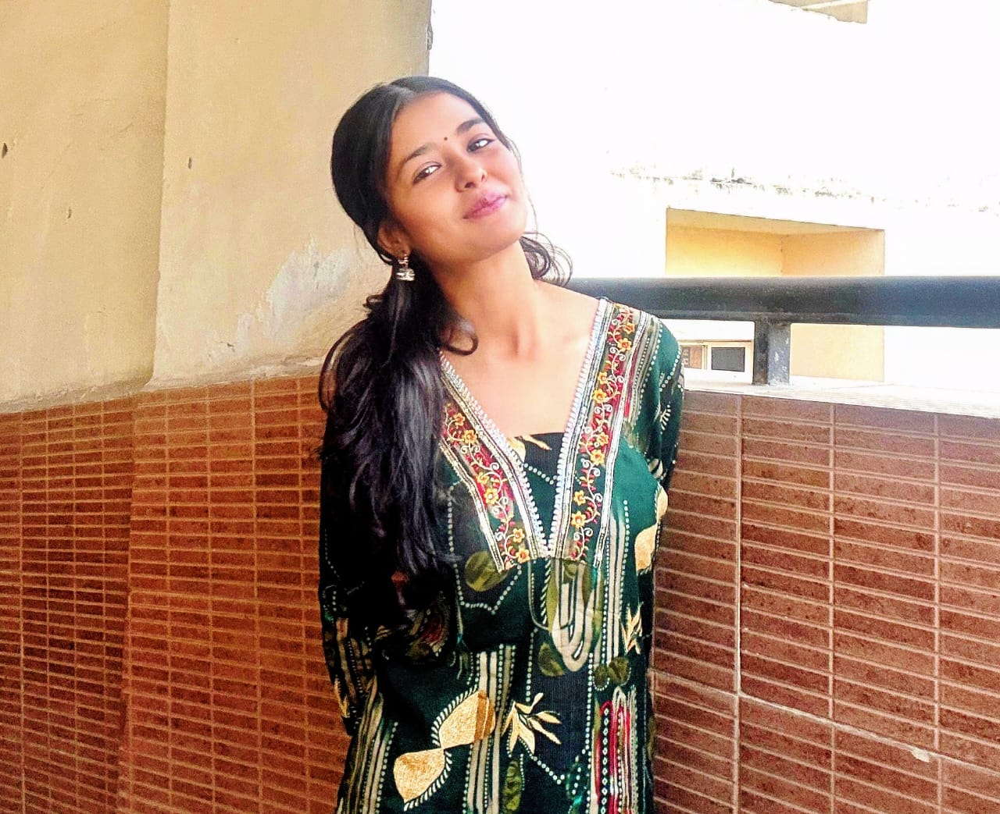

Khushi Solanki

Summary
Motivated and enthusiastic B.Tech student with experience in social media management, content creation, and student counseling. Strong communication skills in Hindi and English with the ability to interact confidently with students, parents, and team members. Seeking a part-time opportunity to enhance professional skills while contributing positively to the organization.
Education
- currently in B.Tech(artificial intelligence and machine learning).2nd year
- Class XII (Completed in 2025)
Work Experience
- Social Media Intern in College Jaana (jan2026-march2026)
- Created and edited engaging social media content and reels.
- Assisted in content planning and online marketing activities.
- Interacted with students and parents regarding admission-related queries.
- Managed documentation and administrative tasks.
- Telecaller Intern in Dainik Jagran (june2026-july2026)
- Worked as a telecaller intern, handling telephonic communication and queries.
Skills
- Communication Skills (Hindi & English)
- Social Media Management
- Content Creation
- Reel Editing
- Team Collaboration
- Time Management
- Problem Solving
- Customer Interaction
- Presentation Skills
Achievements
- Successfully assisted students and parents during admission counseling.
- Created engaging social media content for educational promotion.
- Managed multiple responsibilities while pursuing academics.
Other
- My Hobbies
- Contact Me